【转载】GeoHash原理解析
场景
一个阳光明媚，云淡风轻的周末,你想要出去游玩,于是你拿起手机,打开叫车软件,不一会儿,一辆附近的网约车就帮你找好了，你只需站在原地等待司机来接即可。
你肚子饿了,懒癌晚期的你又不想做饭,于是你拿起手机打开外卖软件,搜索外卖店下单，美味不一会儿就送到了门口
那么你可知道在地图上搜附近的车辆和餐饮店后台是如何查询的呢？
首先我们脑海中立马想到一个方法：计算所在当前位置P与所有网约车的距离，然后返回距离<=1000米的车。但是路上的车何其多啊，这样计算不得了，于是你就想了，既然知道经纬度了，那它应该知道自己在滨江区，那应该计算所在位置P与滨江区所有网约车的距离啊，这是你运用了递归的思想，想到了滨江区也有很多车啊，应该计算所在位置P与所在道路上所有车的距离，这样计算量又小了，效率也提升了。
这样的计算思想很朴素，就是通过过滤的方法来减小参与计算的车数目，从某种角度上讲，你在使用索引技术。
一提到索引，大家脑子里马上浮现出B树索引，因为大量的数据库（如MySQL、oracle、PostgreSQL等）都在使用B树。B树索引本质上是对索引字段进行排序，然后通过类似二分查找的方法进行快速查找，即它要求索引的字段是可排序的，一般而言，可排序的是一维字段，比如时间、年龄、薪水等等。但是对于空间上的一个点（二维，包括经度和纬度），如何排序呢？又如何索引呢？解决的方法很多，下文介绍一种方法来解决这一问题。
思想：如果能通过某种方法将二维的点数据转换成一维的数据，那样不就可以继续使用B树索引了嘛。那这种方法真的存在嘛，答案是肯定的。目前很火的GeoHash算法就是运用了上述思想，下面我们就开始GeoHash之旅吧。
感性认识GeoHash
1 GeoHash将二维的经纬度转换成字符串，比如下图展示了北京9个区域的GeoHash字符串，分别是WX4ER，WX4G2、WX4G3等等，每一个字符串代表了某一矩形区域。也就是说，这个矩形区域内所有的点（经纬度坐标）都共享相同的GeoHash字符串，这样既可以保护隐私（只表示大概区域位置而不是具体的点），又比较容易做缓存，比如左上角这个区域内的用户不断发送位置信息请求网约车数据，由于这些用户的GeoHash字符串都是WX4ER，所以可以把WX4ER当作key，把该区域的餐馆信息当作value来进行缓存，而如果不使用GeoHash的话，由于区域内的用户传来的经纬度是各不相同的，很难做缓存。
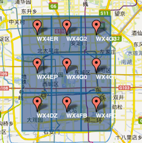
2 字符串越长，表示的范围越精确。如图所示，5位的编码能表示10平方千米范围的矩形区域，而6位编码能表示更精细的区域（约0.34平方千米）
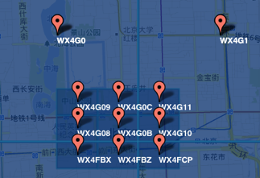
3 字符串相似的表示距离相近（特殊情况后文阐述），这样可以利用字符串的前缀匹配来查询附近的POI信息。如下两个图所示，一个在城区，一个在郊区，城区的GeoHash字符串之间比较相似，郊区的字符串之间也比较相似，而城区和郊区的GeoHash字符串相似程度要低些。
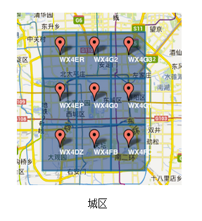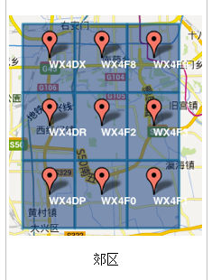
通过上面的介绍我们知道了GeoHash就是一种将经纬度转换成字符串的方法，并且使得在大部分情况下，字符串前缀匹配越多的距离越近，回到我们的案例，根据所在位置查询来查询附近餐馆时，只需要将所在位置经纬度转换成GeoHash字符串，并与各个餐馆的GeoHash字符串进行前缀匹配，匹配越多的距离越近。
这样一来，我们将求最近网约车从算多个坐标点经纬度距离转化为了匹配字符串前缀了，哪个简单快速不言而喻了吧？
其实早期市面上的网约车软件就是采用GeoHash+Redis来实现打车功能的。
GeoHash算法的步骤
下面以北海公园为例介绍GeoHash算法的计算步骤
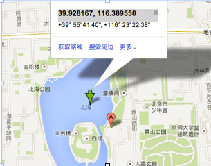
根据经纬度计算GeoHash二进制编码
地球纬度区间是[-90,90]， 北海公园的纬度是39.928167，可以通过下面算法对纬度39.928167进行逼近编码:
区间[-90,90]进行二分为[-90,0),[0,90]，称为左右区间，可以确定39.928167属于右区间[0,90]，给标记为1；
接着将区间[0,90]进行二分为 [0,45),[45,90]，可以确定39.928167属于左区间 [0,45)，给标记为0；
递归上述过程39.928167总是属于某个区间[a,b]。随着每次迭代区间[a,b]总在缩小，并越来越逼近39.928167；
如果给定的纬度x（39.928167）属于左区间，则记录0，如果属于右区间则记录1，这样随着算法的进行会产生一个序列1011100，序列的长度跟给定的区间划分次数有关。
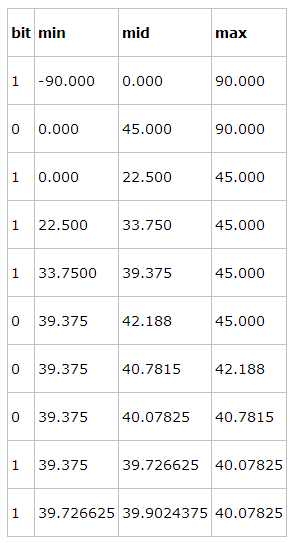
根据纬度算编码
同理，地球经度区间是[-180,180]，可以对经度116.389550进行编码。
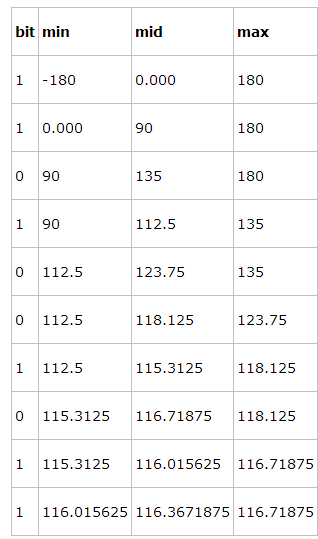
组码
通过上述计算，纬度产生的编码为10111 00011，经度产生的编码为11010 01011。偶数位放经度，奇数位放纬度，把2串编码组合生成新串：11100 11101 00100 01111。
最后使用用0-9、b-z（去掉a, i, l, o）这32个字母进行base32编码，首先将11100 11101 00100 01111转成十进制，对应着28、29、4、15，十进制对应的编码就是wx4g。同理，将编码转换成经纬度的解码算法与之相反，具体不再赘述。
什么是base32编码？
1、I和l，0和O或者2和Z太像了，所以去掉ailo
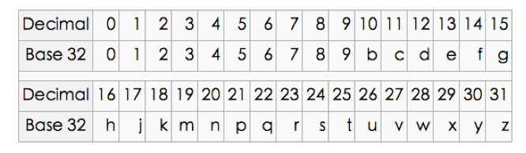
GeoHash Base32编码长度与精度
下表摘自维基百科：http://en.wikipedia.org/wiki/Geohash
可以看出，当geohash base32编码长度为8时，精度在19米左右，而当编码长度为9时，精度在2米左右，编码长度需要根据数据情况进行选择。
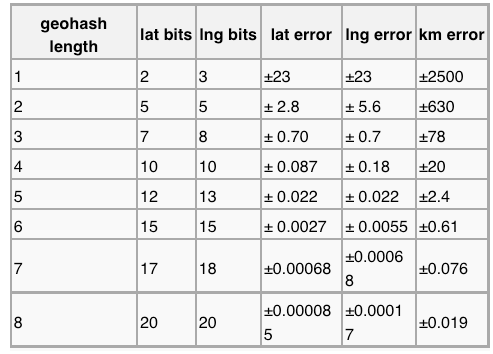
GeoHash算法
上文讲了GeoHash的计算步骤，仅仅说明是什么而没有说明为什么？为什么分别给经度和维度编码？为什么需要将经纬度两串编码交叉组合成一串编码？本节试图回答这一问题。
如图所示，我们将二进制编码的结果填写到空间中，当将空间划分为四块时候，编码的顺序分别是左下角00，左上角01，右下角10，右上角11，也就是类似于Z的曲线，当我们递归的将各个块分解成更小的子块时，编码的顺序是自相似的（分形），每一个子快也形成Z曲线，这种类型的曲线被称为Peano空间填充曲线。
这种类型的空间填充曲线的优点是将二维空间转换成一维曲线（事实上是分形维），对大部分而言，编码相似的距离也相近， 但Peano空间填充曲线最大的缺点就是突变性，有些编码相邻但距离却相差很远，比如0111与1000，编码是相邻的，但距离相差很大。
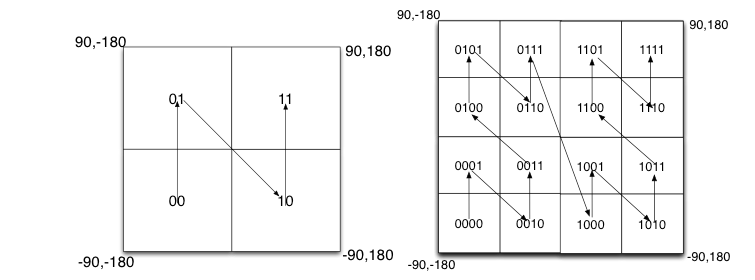
除Peano空间填充曲线外，还有很多空间填充曲线，如图所示，其中效果公认较好是Hilbert空间填充曲线，相较于Peano曲线而言，Hilbert曲线没有较大的突变。为什么GeoHash不选择Hilbert空间填充曲线呢？可能是Peano曲线思路以及计算上比较简单吧，事实上，Peano曲线就是一种四叉树线性编码方式。
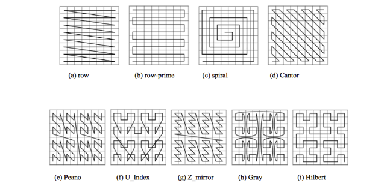
使用注意点
1 由于GeoHash是将区域划分为一个个规则矩形，并对每个矩形进行编码，这样在查询附近POI信息时会导致以下问题，比如红色的点是我们的位置，绿色的两个点分别是附近的两辆车，但是在查询的时候会发现距离较远车的GeoHash编码与我们一样（因为在同一个GeoHash区域块上），而较近车的GeoHash编码与我们不一致。这个问题往往产生在边界处。
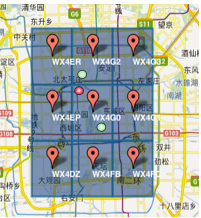
解决的思路很简单，我们查询时，除了使用定位点的GeoHash编码进行匹配外，还使用周围8个区域的GeoHash编码，这样可以避免这个问题。
2 我们已经知道现有的GeoHash算法使用的是Peano空间填充曲线，这种曲线会产生突变，造成了编码虽然相似但距离可能相差很大的问题，因此在查询附近餐馆时候，首先筛选GeoHash编码相似的POI点，然后进行实际距离计算。
geohash只是空间索引的一种方式，特别适合点数据，而对线、面数据采用R树索引更有优势
参考文献：
http://en.wikipedia.org/wiki/Geohash
本文转载自 http://www.cnblogs.com/LBSer/p/3310455.html
This blog is under a CC BY-NC-SA 3.0 Unported License
本文链接：http://hogwartsrico.github.io/2015/01/22/About-GeoHash/